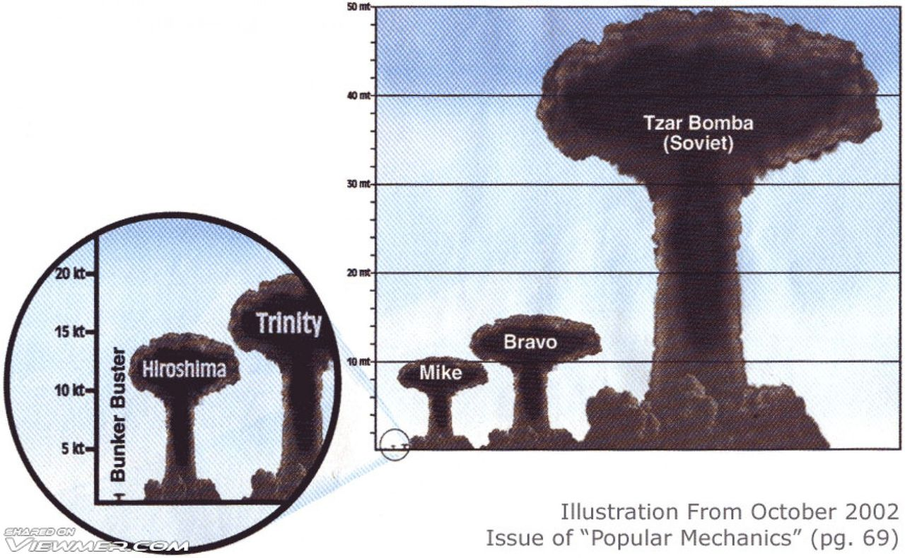

Startseite
H-Bombe
Hiroshima
Nagasaki
Kontakt
Unterschied zwischen Atom- und Wasserstoffbombe

Es gibt zwei Typen von Atombomben: Kernspaltungs- und Kernfusionsbomben.
Kernfusionsbomben werden auch Wasserstoffbomben genannt,
weil sie die zwei Wasserstoffisotope Deuterium (schwerer Wasserstoff)
und Tritium (superschwerer Wasserstoff) miteinander fusionieren (schmelzen)
und damit viel Energie in Form von einer Explosion freigeben.
Kernspaltungsbomben hinegen spalten Uran- oder Plutoniumatomkerne in kleinere Atome
und geben somit die Energie in Form von einer Explosion frei.
Kernspaltungsbomben können eine Sprengkraft im MT-Bereich nicht erreichen.
Wasserstoffbomben haben hingegen keinen Sprenkraft-"Limit" und befinden sich
meistens im MT-Bereich (1 Megatonne = 1 Million Tonnen im TNT-Equivalent).
Die Tsar Bomba war die größte je vom Menschen gezündete Bombe. Mit einer Sprengkraft von 57 MT
war sie mehr als 4000 mal stärker als die Hiroshima Bombe, die eine Sprengkraft von 13 KT hatte.
Der Atompilz war 64km hoch und die erzeugte Sprengwelle ist 3 mal um die Erde gegangen.
Die Bombe konnte 100km vom Epizenter Verbrennungen 3. Grades erzeugen.